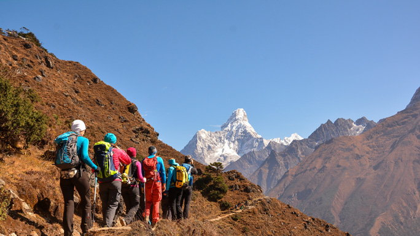
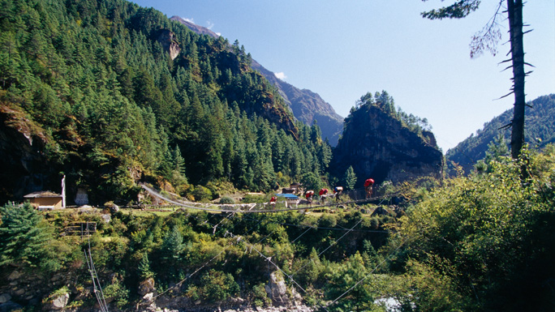
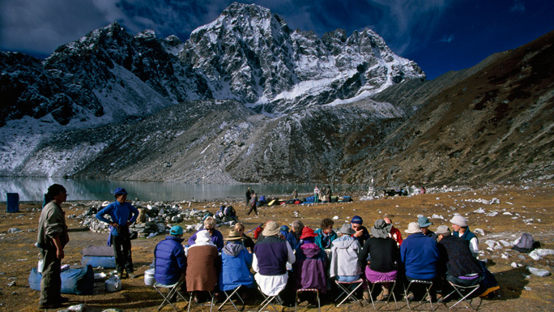
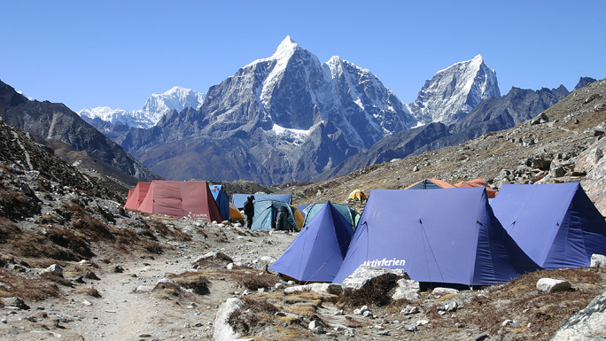
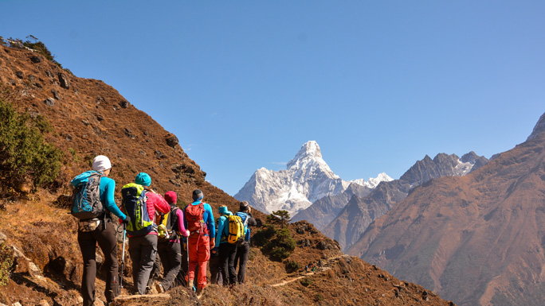
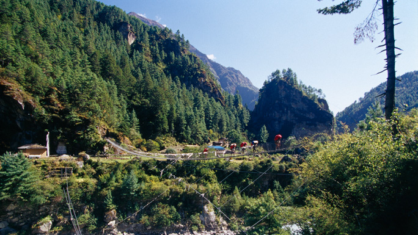
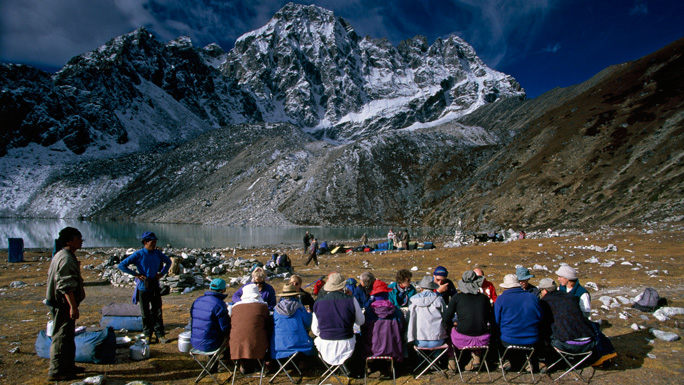
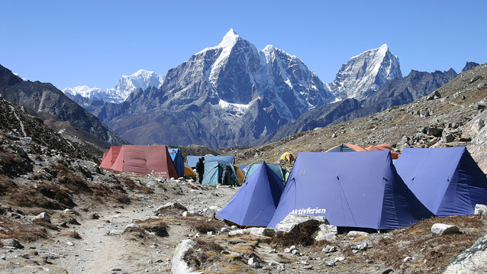

EVEREST
Try Everest if you wish to reach the top of the world,literally & figuratively.
Reach the highest point on earth or choose to live out your dream by standing at the foot of Mt. Everest (8,848 m).The Everest region in Nepal is more than just trekking, it is a milestone in anyone’s life; and some have even described the experience as a journey close to Nirvana. Located in the northeast province of Nepal, this is a colony to dramatic glaciers, deep settlements, several majestic mountains.
 Passing through legendary Sherpa villages, the trek is a mix of a deeply cultural and spiritual experience in addition to the physical one. Buddhist lamas, monks and nuns led by Rinpoches (reincarnate lamas) serve the predominantly Sherpa communities from gompas (monasteries).The journey to Everest or Everest Base Camp, begins from Lukla, if you are taking a direct flight from the capital. However, for die-hard lovers of trekking, there is an another switchback starting from Jiri through the mid-hills of Solu; ethnically diverse and flora-rich.
 Taking a flight is a time-saver, while trekking from Jiri gives you the opportunity to take in each tiny detail of the trek, with extra time to to meet the charming people and see the rich flora and fauna on the trail.The option from Jiri will roughly take 10 days to reach the famous Sherpa village, Namche Bazaar (3,500m). The Sagarmatha National Park in the Khumbu is one of the few places on earth with the rarest bio-diversity and the highest and youngest mountain system in the world.
 For those with sufficient time, a 10-12 day trek through Solu to the Khumbu and the Sagarmatha National Park is an excellent itinerary both in terms of acclimatization and to experience the changing customs, traditions, and lifestyles as you pass through lower altitude settlements to those in the higher altitudes.A part of the Himalayan ecological zone, the park was added to the list of UNESCO Natural World Heritage Sites in 1979. The park contains three of the world's seven highest mountains Sagarmatha or Mt. Everest, Lhotse, and Cho Oyu and is also home to several other prominent peaks most of which are above 6,000 meters.
 Climbers and trekkers continue to trek to Everest Base Camp and not surprisingly the "Roof of the World" continues to be the scene of some of mountaineering's most significant accomplishments and a favored haven for alpine enthusiasts.The Everest region has been valued as the key to evolutionary history of the Earth, and is also a habitat for some rare and endangered species like snow leopard, red panda, Himalayan black bear, musk deer and Himalayan wolves.
 Passing through legendary Sherpa villages, the trek is a mix of a deeply cultural and spiritual experience in addition to the physical one. Buddhist lamas, monks and nuns led by Rinpoches (reincarnate lamas) serve the predominantly Sherpa communities from gompas (monasteries).The journey to Everest or Everest Base Camp, begins from Lukla, if you are taking a direct flight from the capital. However, for die-hard lovers of trekking, there is an another switchback starting from Jiri through the mid-hills of Solu; ethnically diverse and flora-rich.
 Taking a flight is a time-saver, while trekking from Jiri gives you the opportunity to take in each tiny detail of the trek, with extra time to to meet the charming people and see the rich flora and fauna on the trail.The option from Jiri will roughly take 10 days to reach the famous Sherpa village, Namche Bazaar (3,500m). The Sagarmatha National Park in the Khumbu is one of the few places on earth with the rarest bio-diversity and the highest and youngest mountain system in the world.
 For those with sufficient time, a 10-12 day trek through Solu to the Khumbu and the Sagarmatha National Park is an excellent itinerary both in terms of acclimatization and to experience the changing customs, traditions, and lifestyles as you pass through lower altitude settlements to those in the higher altitudes.A part of the Himalayan ecological zone, the park was added to the list of UNESCO Natural World Heritage Sites in 1979. The park contains three of the world's seven highest mountains Sagarmatha or Mt. Everest, Lhotse, and Cho Oyu and is also home to several other prominent peaks most of which are above 6,000 meters.
 Climbers and trekkers continue to trek to Everest Base Camp and not surprisingly the "Roof of the World" continues to be the scene of some of mountaineering's most significant accomplishments and a favored haven for alpine enthusiasts.The Everest region has been valued as the key to evolutionary history of the Earth, and is also a habitat for some rare and endangered species like snow leopard, red panda, Himalayan black bear, musk deer and Himalayan wolves.